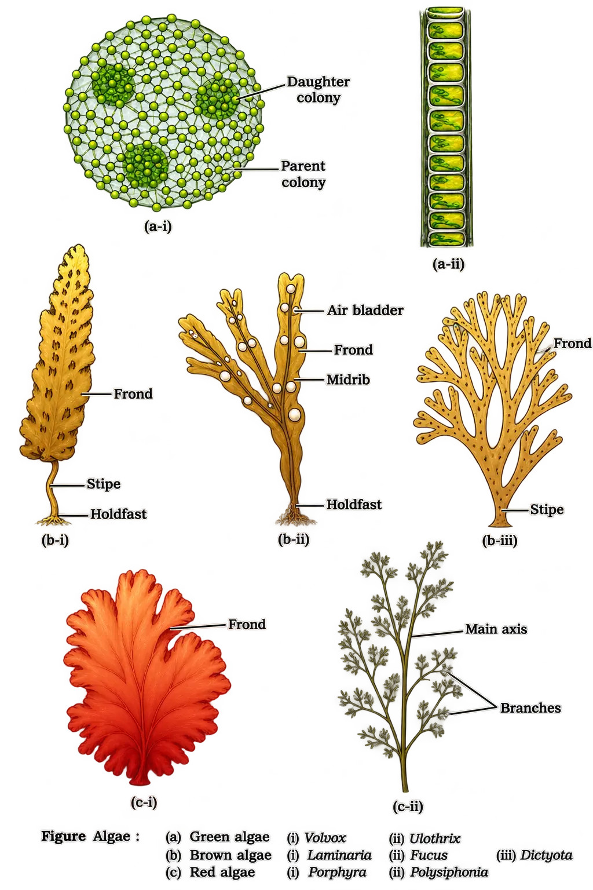
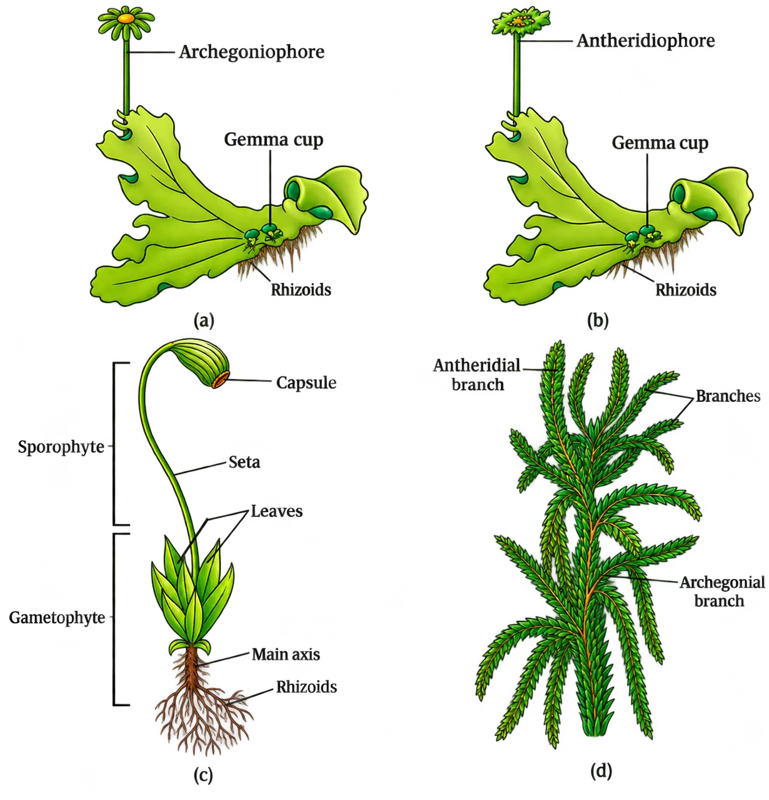
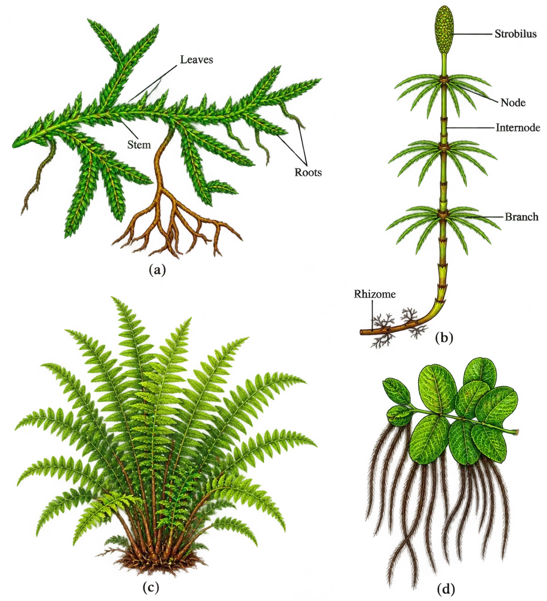
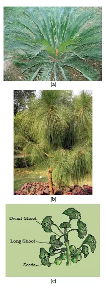
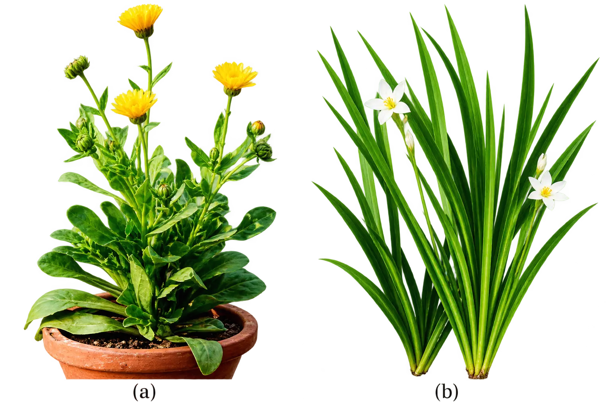

Ch-03 : Plant Kingdom
Plant Kingdom (Kingdom Plantae): Scope & Changing Concepts
MoneraProkaryotes
ProtistaUnicellular eukaryotes
FungiAbsorptive heterotrophs
AnimaliaIngestive heterotrophs
PlantaePhotosynthetic eukaryotes (concept changed)
- Fungi are now excluded from Plantae (though earlier systems grouped them with plants).
- Monera/Protista members with cell walls are also excluded from Plantae in modern understanding.
- Cyanobacteria (blue-green algae) are not algae anymore; they belong to Monera.
AlgaeThalloid, chlorophyll-bearing forms
BryophytesNon-vascular land plants
PteridophytesVascular cryptogams
GymnospermsNaked-seeded plants
AngiospermsFlowering plants; seeds enclosed
Classification Systems in Angiosperms: Artificial → Natural → Phylogenetic
Artificial
→Natural
→Phylogenetic
Artificial Systems (Early Systems)
- Habit
- Colour
- Number and shape of leaves
- They may separate closely related species because they rely on only a few traits.
- They give equal weightage to vegetative and sexual characters.
- This is not acceptable because vegetative characters are more easily affected by environment, hence can mislead relationships.
Natural Classification Systems
- External features
- Internal features such as ultrastructure, anatomy, embryology, phytochemistry
George BenthamNatural system for flowering plants
Joseph Dalton HookerCo-developer of the natural system
Phylogenetic Classification Systems (Modern/Accepted)
Modern Supporting Approaches in Taxonomy
Numerical TaxonomyUses all observable characters; computer-based coding & processing
CytotaxonomyUses cytological info: chromosome number, structure, behaviour
ChemotaxonomyUses chemical constituents to resolve confusions
- Based on all observable characteristics.
- Numbers/codes assigned to characters; data processed (now easy using computers).
- Each character gets equal importance.
- Hundreds of characters can be considered simultaneously.
Algae (3.1): General Characters, Reproduction & Importance
General Characteristics & Habitat
- Moist stones
- Soils
- Wood
- With fungi → lichen
- With animals → e.g. on sloth bear
Thallus Form and Size Variation (Examples)
ColonialVolvox
FilamentousUlothrix, Spirogyra
Massive marine formskelps form very large plant bodies
Reproduction in Algae
Vegetative
→Fragmentation
→Each fragment forms a new thallus
Asexual
→Spore formation
→Common: zoospores (flagellated, motile)
→Germination gives new plants
- Flagellated (motile) or non-flagellated (non-motile)
- Similar or dissimilar in size
Types of Sexual Reproduction (Definitions + Examples)
IsogamousGametes similar in size (may be motile or non-motile)
AnisogamousGametes dissimilar in size
OogamousLarge non-motile female gamete + small motile male gamete
- Ulothrix: gametes are flagellated and similar in size.
- Spirogyra: gametes are non-flagellated (non-motile) but similar in size.
- Eudorina species
- Volvox
- Fucus
Economic & Ecological Importance of Algae
- CO₂ fixation: algae perform at least half of total CO₂ fixation on Earth via photosynthesis.
- Increase dissolved oxygen level in their immediate environment (due to photosynthesis).
- Primary producers: form the base of food cycles of aquatic animals by producing energy-rich compounds.
- About 70 species of marine algae used as food.
PorphyraEdible marine alga
LaminariaEdible marine alga
SargassumEdible marine alga
Alginfrom brown algae
Carrageenfrom red algae
- Obtained from Gelidium and Gracilaria
Agar
→Used to grow microbes
→Used in ice-creams and jellies
- Chlorella (unicellular, rich in proteins) used as food supplement, even by space travellers.
Major Classes of Algae

ChlorophyceaeGreen algae
PhaeophyceaeBrown algae
RhodophyceaeRed algae
Chlorophyceae (3.1.1): Green Algae
Thallus Organisation and Pigments
- Plant body may be unicellular, colonial, or filamentous.
- Usually grass green due to dominance of chlorophyll a and chlorophyll b.
- Pigments are localised in definite chloroplasts.
DiscoidDisc-like
Plate-likeFlat plates
ReticulateNet-like
Cup-shapedCup form
SpiralHelical
Ribbon-shapedLong band
Pyrenoids and Food Storage
- Pyrenoids contain protein besides starch.
- Some green algae may store food as oil droplets.
Cell Wall Composition
- Inner layer: cellulose
- Outer layer: pectose
Reproduction in Chlorophyceae
- Vegetative reproduction: usually by fragmentation.
- Asexual reproduction: by flagellated zoospores produced in zoosporangia.
- Sexual reproduction: variable—may be isogamous, anisogamous, or oogamous.
Common Examples
ChlamydomonasGreen alga
VolvoxColonial green alga
UlothrixFilamentous; isogamous with motile gametes
SpirogyraFilamentous; isogamous with non-motile gametes
CharaCommon green alga
Phaeophyceae (3.1.2): Brown Algae (Start of Section)
Habitat, Size Range, and Forms
Simple branched, filamentous formse.g. Ectocarpus
Profusely branched kelpsmay reach 100 metres in height
Pigments and Colour
Chlorophyll aphotosynthetic pigment
Chlorophyll cphotosynthetic pigment
Carotenoidsaccessory pigments
Xanthophyllsaccessory pigments
Plant Kingdom: Algae (continued) — Phaeophyceae (Brown algae)
Food reserve, cell wall and cell organisation
- Cell wall: mainly cellulosic, usually with an outer gelatinous coating of algin.
- Protoplast (cell contents): contains plastids, a centrally located vacuole and a nucleus.
Thallus organisation (plant body)
Holdfast
→Stipe
→Frond
HoldfastAnchors the plant body to the substratum
StipeStalk-like region
FrondLeaf-like, photosynthetic region
Reproduction in brown algae
- Pear-shaped (pyriform)
- Have two unequal flagella
- Flagella are laterally attached
IsogamousGametes similar in form/size
AnisogamousGametes dissimilar (usually size)
OogamousLarge non-motile egg + smaller motile male gamete
- Site of gamete fusion: either in water or within the oogonium (in oogamous forms).
- Gametes: typically pyriform with two laterally attached flagella.
Common examples of brown algae
EctocarpusCommon brown alga genus
DictyotaCommon brown alga genus
LaminariaKelp-type brown algae
SargassumMarine brown alga
FucusMarine brown alga
Rhodophyceae (Red algae)
Habitat and distribution
- Majority marine, with greater concentrations in warmer areas.
- Found both:
- near the surface in well-lighted regions, and
- at great ocean depths where relatively little light penetrates.
Thallus organisation and food reserve
- Thallus: most are multicellular; some show complex body organisation.
- Stored food: floridean starch, structurally very similar to amylopectin and glycogen.
Reproduction in red algae
Vegetative: fragmentation
→Asexual: non-motile spores
→Sexual: non-motile gametes
- Vegetative reproduction: by fragmentation.
- Asexual reproduction: by non-motile spores.
- Sexual reproduction: by non-motile gametes.
- Sexual reproduction is oogamous and accompanied by complex post-fertilisation developments.
Common examples of red algae
PolysiphoniaRed alga genus
PorphyraRed alga genus
GracilariaRed alga genus
GelidiumRed alga genus
Divisions of Algae and Their Main Characteristics (Table 3.1)
Chlorophyceae (Green algae)
Major pigmentschlorophyll a, b
Stored foodstarch
Cell wallcellulose
Flagella2–8, equal, apical insertion
Habitatfresh water, brackish water, salt water
Phaeophyceae (Brown algae)
Major pigmentschlorophyll a, c, fucoxanthin
Stored foodmannitol, laminarin
Cell wallcellulose + algin
Flagella2, unequal, lateral insertion
Habitatfresh water (rare), brackish water, salt water
Rhodophyceae (Red algae)
Major pigmentschlorophyll a, d, phycoerythrin
Stored foodfloridean starch
Cell wallcellulose, pectin and poly sulphate esters
Flagellaabsent
Habitatfresh water (some), brackish water, salt water (most)
GBR
Bryophytes
“Amphibians of the plant kingdom”
Water = “bridge” for male gametes to swim to the egg → without water, fertilisation can’t happen.
- Occur in damp, humid, shaded localities.
- Important in plant succession on bare rocks/soil.
Plant body organisation: gametophyte dominance

- Plant body is more differentiated than algae.
- Body is thallus-like (prostrate or erect).
- Attachment: by unicellular or multicellular rhizoids.
- Lack true roots, stem, leaves (may have root-like/leaf-like/stem-like structures).
- Main plant body is haploid and produces gametes → called gametophyte.
Sex organs and fertilisation (water-dependent)
AntheridiumMale sex organ; produces biflagellate antherozoids
ArchegoniumFemale sex organ; flask-shaped; produces a single egg
Antherozoids released into water
→
Reach archegonium
→
Fusion with egg
→
Zygote formed
Sporophyte formation, meiosis and spores
- Sporophyte is not free-living; remains attached to the photosynthetic gametophyte and derives nourishment from it.
- Some sporophyte cells undergo reduction division (meiosis) → produce haploid spores.
- Spores germinate → form the gametophyte.
Economic and ecological importance
Think: bryophytes = “nature’s first carpet” on rocks + “mini sponges” holding water.
- Generally little economic importance.
- Some mosses provide food for herbaceous mammals, birds and other animals.
- Sphagnum forms peat used as fuel.
- Sphagnum used as packing material for trans-shipment of living material due to high water-holding capacity.
- Mosses + lichens are first colonisers of rocks → ecological importance.
- They decompose rocks to make substrate suitable for higher plants.
- Dense moss mats reduce rain impact → prevent soil erosion.
Major groups of bryophytes
LiverwortsBryophyte division 1
MossesBryophyte division 2
Liverworts (Bryophytes: 3.2.1)
Habitat
- Grow in moist, shady habitats: banks of streams, marshy ground, damp soil, bark of trees, deep woods.
Plant body form
- Plant body often thalloid (example: Marchantia).
- Thallus is dorsiventral and closely appressed to the substrate.
- Leafy liverworts: have tiny leaf-like appendages arranged in two rows on stem-like structures.
Asexual reproduction
FragmentationThallus breaks; each part can form a new plant
Gemmae formationSpecialised asexual buds formed in gemma cups
- Gemmae (sing. gemma): green, multicellular, asexual buds.
- Produced in small receptacles called gemma cups located on the thalli.
- Gemmae detach and germinate → new individuals.
Sexual reproduction and sporophyte structure
- Male and female sex organs produced either on the same thallus or on different thalli.
- Sporophyte is differentiated into:
FootPart of sporophyte (attached region)
SetaStalk region of sporophyte
CapsuleSpore-producing region
- Meiosis in capsule → spores formed inside capsule.
- Spores germinate → free-living gametophytes.
Mosses (Bryophytes: 3.2.2)
Dominant stage and two gametophyte stages
Protonema stageDevelops directly from spore; creeping, green, branched, often filamentous
Leafy stageDevelops from secondary protonema as a lateral bud; upright axes with spirally arranged leaves
- Leafy stage has upright, slender axes with spirally arranged leaves.
- Attachment to soil: multicellular, branched rhizoids.
- Leafy stage bears sex organs.
Vegetative reproduction
- By fragmentation.
- By budding in the secondary protonema.
Sexual reproduction and sporophyte
- Antheridia and archegonia produced at the apex of leafy shoots.
- After fertilisation, zygote develops into sporophyte with:
FootPart of sporophyte (attached region)
SetaStalk region of sporophyte
CapsuleContains spores (after meiosis)
- Sporophyte in mosses is more elaborate than in liverworts.
- Capsule contains spores formed after meiosis.
- Mosses show an elaborate mechanism of spore dispersal.
Examples of mosses
FunariaCommon moss
PolytrichumCommon moss
SphagnumPeat moss; high water-holding
Pteridophytes (3.3)
- Xylem
- Phloem

Uses and habitat
MedicinalUsed for medicinal purposes
Soil-bindersHelp in binding soil
OrnamentalsFrequently grown as ornamentals
- Common in cool, damp, shady places.
- Some flourish in sandy-soil conditions.
Dominant plant body (sporophyte) and differentiation
- Main plant body is a sporophyte differentiated into true root, stem and leaves.
- These organs possess well-differentiated vascular tissues.
Leaves: microphylls vs macrophylls
MicrophyllsSmall leaves (e.g., Selaginella)
MacrophyllsLarge leaves (e.g., ferns)
Sporangia, sporophylls and strobili
Sporophyte bears sporangia
→
Sporangia subtended by sporophylls
→
Sporophylls may pack into strobili (cones)
- Sporophytes bear sporangia.
- Sporangia are subtended by leaf-like appendages called sporophylls.
- In some cases, sporophylls form compact structures called strobili (cones) (examples: Selaginella, Equisetum).
Spore formation and early gametophyte
Spore mother cells in sporangia
→
Meiosis
→
Haploid spores
→
Germination
→
Inconspicuous small multicellular stage (gametophyte)
Pteridophytes (continued): Gametophyte, Fertilisation, Spore Types & Classification
Prothallus (gametophyte) and habitat requirement
Prothalli are picky about conditions: they prefer cool + damp + shady spots, so pteridophytes often end up restricted to narrow geographical regions.
Sex organs and water-dependent fertilisation
- Antheridia = male sex organs on the gametophyte
- Archegonia = female sex organs on the gametophyte
- Antherozoids = male gametes released from antheridia
Antheridia release antherozoids
→
Water carries antherozoids to archegonium
→
Fusion with egg in archegonium
→
Zygote
→
Multicellular, well-differentiated sporophyte (dominant phase)
Homosporous vs heterosporous pteridophytes; evolutionary significance
HomosporousAll spores are similar in size and type
HeterosporousTwo spore types: microspores (small) + megaspores (large)
- Homosporous pteridophytes: produce only one kind of spore (majority of pteridophytes).
- Heterosporous pteridophytes: produce microspores and megaspores.
- Microspores germinate to form male gametophytes.
- Megaspores germinate to form female gametophytes.
- Female gametophyte is retained on the parent sporophyte for variable periods.
- Zygote develops into a young embryo within the female gametophyte.
Classes of pteridophytes (with examples)
PsilopsidaPsilotum
LycopsidaSelaginella, Lycopodium
SphenopsidaEquisetum
PteropsidaDryopteris, Pteris, Adiantum
Gymnosperms (3.4): Naked Seeds, Plant Body, Reproduction & Cones
Definition: “naked-seeded” condition
Think: “seed sitting out in the open” — no fruit covering it.

Habit and examples
- Include medium-sized trees, tall trees and shrubs.
- Sequoia (giant redwood) is among the tallest tree species.
Roots, stems and leaves: key adaptations
- Roots: generally tap roots.
- Mycorrhiza: fungal association in roots of some genera (e.g., Pinus).
- Coralloid roots: small specialised roots in Cycas, associated with N2-fixing cyanobacteria.
- Stems: unbranched in Cycas; branched in Pinus, Cedrus.
- Leaves: may be simple or compound; Cycas has pinnate leaves that persist for a few years.
- Needle-like leaves reduce surface area.
- Thick cuticle reduces transpiration.
- Sunken stomata reduce water loss in dry/windy/cold conditions.
Heterospory and strobili (cones)
Microsporangiate (male) strobilusMicrosporophylls + microsporangia
Macrosporangiate (female) strobilusMegasporophylls + ovules/megasporangia
Male gametophyte: pollen grain (highly reduced)
Female gametophyte formation inside the ovule
- Megaspore mother cell differentiates from a cell of the nucellus.
- Nucellus is protected by envelopes; the composite structure is an ovule.
- Ovules are borne on megasporophylls (often clustered into female cones).
- Megaspore mother cell undergoes meiosis to form four megaspores.
- One megaspore (within the megasporangium) develops into a multicellular female gametophyte.
- The female gametophyte bears two or more archegonia (female sex organs).
- The female gametophyte is retained within the megasporangium.
Arrangement of male and female cones on plants
- Pinus: male and female cones may be borne on the same tree.
- Cycas: male cones and megasporophylls are borne on different trees.
Pollination, pollen tube and fertilisation; seed formation
Pollen grain released from microspor-angium
→Carried by air currents
→Contacts opening of ovule on megasporo-phyll
→Pollen tube grows toward archegonia
→Male gametes discharged near archegonium mouth
→Fertilisation → zygote → embryo
→Ovule becomes seed (naked)
Angiosperms (3.5): Flowers, Fruits, Diversity & Classes
Defining features: flowers and enclosed seeds
Gymnosperms: “seed exposed” • Angiosperms: “seed packed inside fruit”

Range, habitats and importance
- Exceptionally large group found in a wide range of habitats.
- Size range: from Wolffia (smallest) to Eucalyptus (over 100 m tall).
- Provide food, fodder, fuel, medicines and many commercially important products.
Major classes of angiosperms
DicotyledonsAngiosperms with two cotyledons (as per standard classification)
MonocotyledonsAngiosperms with one cotyledon (as per standard classification)
Chapter Summary
Algae (key recall points)
* Algae are chlorophyll-bearing, simple, thalloid, autotrophic and largely aquatic organisms.* They occur as colonial forms (Volvox), filamentous forms (Ulothrix, Spirogyra) and massive marine forms such as kelps.
* They reproduce by vegetative (fragmentation), asexual (mainly zoospores) and sexual methods.
* Sexual reproduction may be isogamous (Ulothrix, Spirogyra), anisogamous (Eudorina) or oogamous (Volvox, Fucus).
* Algae are important primary producers and are classified into three main classes: Chlorophyceae, Phaeophyceae and Rhodophyceae.
Bryophytes (key recall points)
- Live on soil but depend on water for sexual reproduction.
- Plant body more differentiated than algae; thallus-like, prostrate/erect; attached by rhizoids; possess root-like, stem-like, leaf-like structures.
- Divided into liverworts (thalloid, dorsiventral) and mosses (upright slender axes with spirally arranged leaves).
- Main plant body is gametophyte bearing antheridia and archegonia.
- Gamete fusion → zygote → multicellular sporophyte producing haploid spores → spores germinate → gametophytes.
Pteridophytes (key recall points)
- Main plant body is sporophyte with true root, stem, leaves and well-differentiated vascular tissues.
- Sporophyte bears sporangia → spores.
- Spores germinate into gametophytes (prothallus) needing cool, damp places.
- Gametophyte bears antheridia and archegonia; water needed for male gamete transfer to archegonium.
- Fertilisation → zygote → sporophyte.
Gymnosperms (key recall points)
- Ovules not enclosed by ovary wall; seeds are naked.
- Microspores and megaspores produced in microsporangia and megasporangia on sporophylls.
- Sporophylls arranged spirally to form male and female cones.
- Pollen grain germinates; pollen tube releases male gamete into ovule; male gamete fuses with egg in archegonium.
- Post-fertilisation: zygote → embryo; ovule → seed.